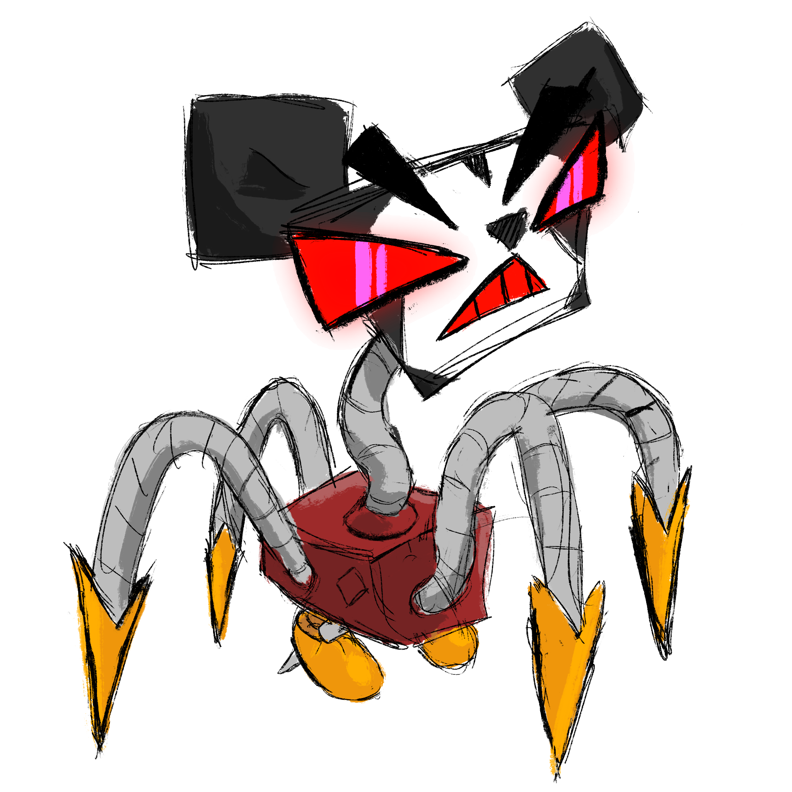

Github
None
Introduction
Features
Main Features
Traits
CAFFINATED
EXHAUSTED
BUFF LEGS
HISTORIAN
ENABLER
MULTITASKER
HARDENED CRIMINAL
SMARTASS
PIGLOVER
WATER VESSEL EXPERT
SAVIOR
Locations
Date Locations
Library
Coffee Shop
J-mart
JFC
Statue
Botanic Gardens
Pigs
Trash
Mall’s Balls
Project Honeypot Wiki
»
Features »
Locations »
Mall’s Balls
Nothing to see here

« Previous